Ensemble simulation and parallelism
Pablo Almaraz, RElab
2026-05-23
Source:vignettes/ensemble-simulation.Rmd
ensemble-simulation.RmdEnsemble simulation in janos
Stochastic dynamical systems produce a different trajectory on every
run, so characterizing their behavior requires many independent
replicates. The ensemble_sim() function runs these
replicates efficiently with two-tier parallelization: compiled C++
OpenMP batch templates handle SSA Direct, SDE Euler-Maruyama, and
adaptive tau-leap solvers at maximum throughput, while an R-level
parallel fallback (parallel::mclapply() or
future.apply::future_lapply()) supports every solver type
in the package.
Basic ensemble workflow
The interface mirrors dyn_sim() but adds
n_replicates and parallel-execution controls. Consider a
birth-death process where the death rate slightly exceeds the birth
rate, so extinction is eventual but stochastic:
bd <- system_spec(
stoichiometry = list(
birth = c(N = 1L),
death = c(N = -1L)
),
propensities = list(
birth ~ lambda * N,
death ~ mu * N
),
state_names = "N",
parms = list(lambda = 1.0, mu = 1.1),
init = c(N = 100L)
)
ens <- ensemble_sim(bd, n_replicates = 500, t_max = 20,
solver = solver_ssa_direct(seed = 42))
#> ⚙ Ensemble simulation: 500 replicates
#> ¡ Backend: openmp (19 threads)
#> ¡ Solver: ssa_direct, t_max = 20, seed = 42
#> ✔ Ensemble completed in 3.44s
print(ens)
#>
#> Ensemble simulation
#> ----------------------------------------
#>
#> Replicates: 500
#> Solver: ssa_direct
#> Duration: 20
#> Backend: openmp (19 threads)
#> Elapsed: 3.44s
#>
#> Terminal state statistics:
#> N: mean = 13.344, sd = 15.118
#>
#> Extinction events:
#> N: 128/500 (25.6%)
summary(ens)
#>
#> Ensemble simulation summary
#> =============================================
#>
#> Replicates: 500
#> Backend: openmp
#> Elapsed: 3.44s
#>
#> Terminal state statistics:
#> state mean sd median q25 q75 min max
#> N 13.344 15.11829 8 0 21 0 85
#>
#> Extinction events:
#> N: 128/500 (25.6%)
#>
#> Trajectory summary available (fan chart, spaghetti plots).The ensemble_sim object contains trajectory summaries
(mean, standard deviation, quantiles at each time point), terminal
states for all replicates, extinction tracking for CTMC models, and
integration metadata including the backend used and wall-clock time.
Plot types
janos provides six plot types for ensemble results, each suited to different aspects of the dynamics.
Fan chart
The default "fan" plot shows the median trajectory
surrounded by quantile ribbons, giving a visual summary of the
ensemble’s distributional spread:
plot(ens, type = "fan", title = "Birth-death ensemble fan chart")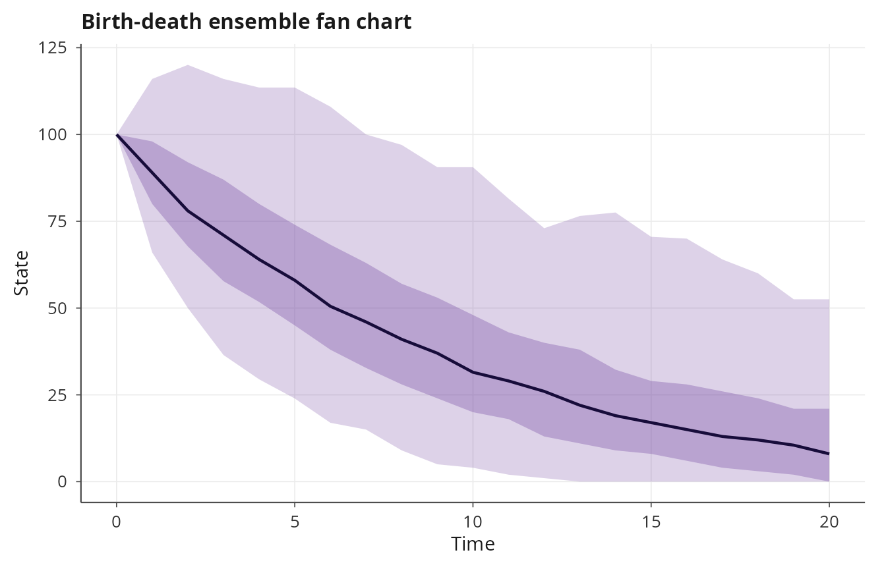
Spaghetti plot
The "spaghetti" plot overlays a sample of individual
trajectories, revealing the actual realization-level behavior rather
than smoothed summaries. This is especially informative for multimodal
or extinction-prone processes:
plot(ens, type = "spaghetti", max_traces = 50,
title = "Birth-death individual trajectories")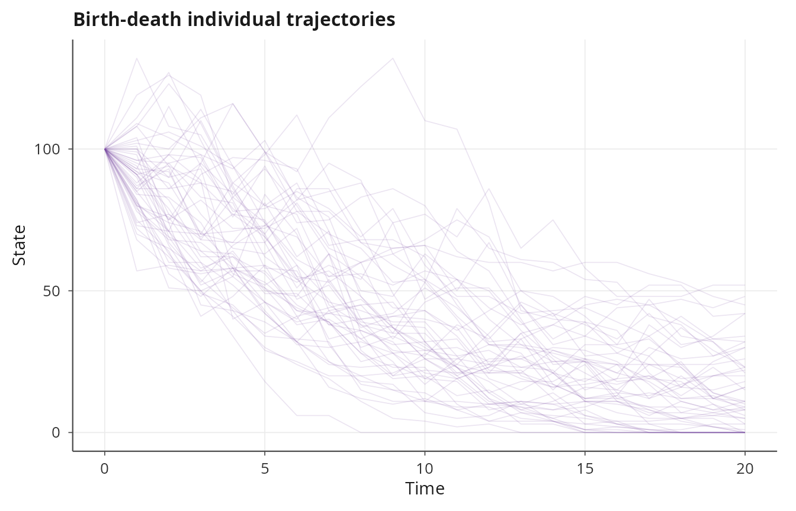
Terminal state density
The "terminal" plot shows the distribution of final
states across replicates, which is useful for assessing the variability
of outcomes at a fixed time horizon:
plot(ens, type = "terminal", title = "Birth-death terminal states")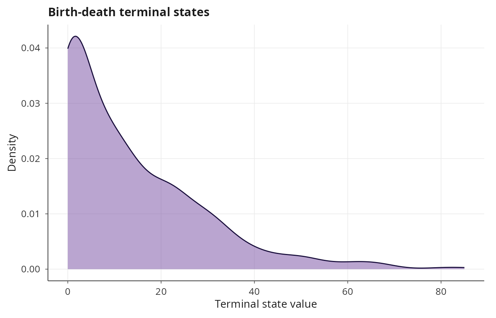
Mean and standard deviation bands
The "mean_sd" plot shows the ensemble mean with
plus/minus one standard deviation bands:
plot(ens, type = "mean_sd", title = "Birth-death mean and SD")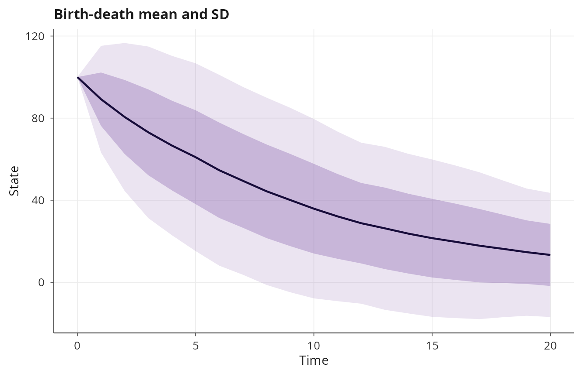
Extinction curve
For CTMC models, the "extinction" plot displays the
cumulative proportion of replicates that have reached the absorbing
state (zero counts) as a step function of time. This provides a
nonparametric estimate of the extinction time distribution:
plot(ens, type = "extinction", title = "Birth-death extinction curve")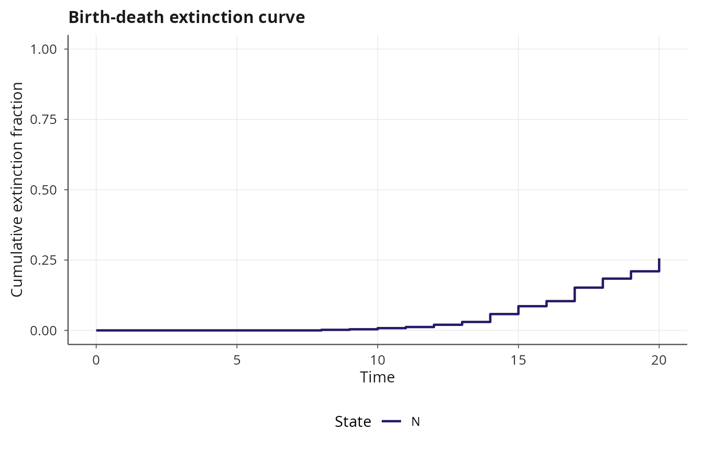
Convergence diagnostics
The "convergence" plot tracks the running mean and
standard error across replicates, which is essential for determining
whether the ensemble size is sufficient. If the running mean has not
stabilized, more replicates are needed:
plot(ens, type = "convergence", title = "Birth-death convergence")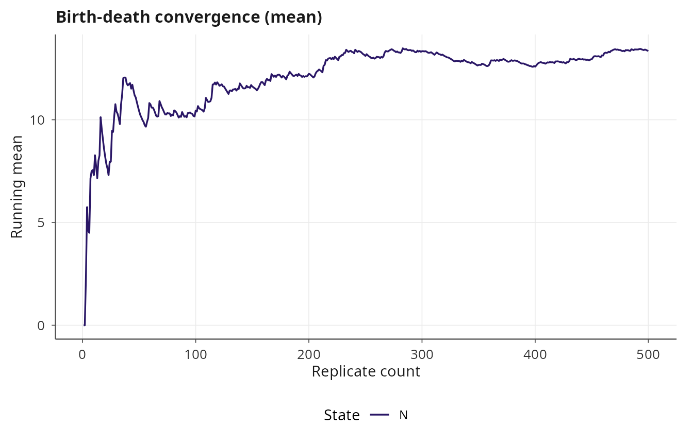
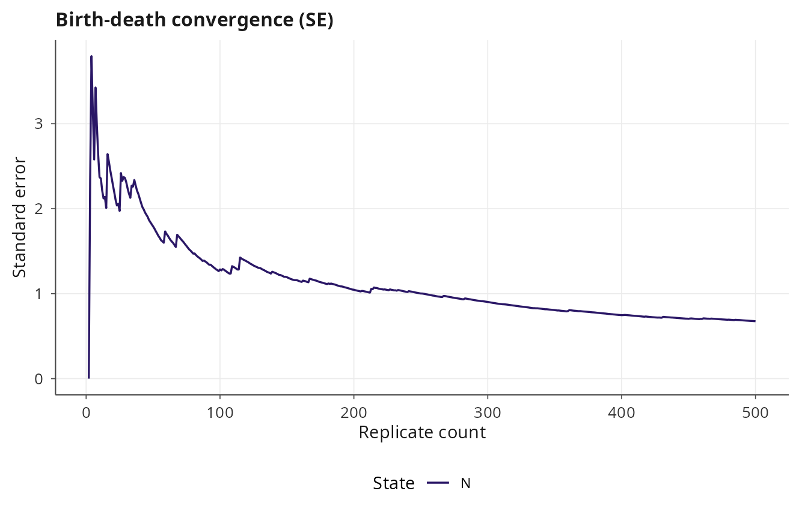
Backend selection
The backend argument controls the parallelization
strategy. With "auto" (the default), janos selects the
fastest available backend. The OpenMP batch path is chosen when the
solver is one of solver_ssa_direct(),
solver_euler_maruyama(), or solver_tau_leap()
and all replicates share identical initial conditions and parameters
(i.e., vary is NULL). In all other cases, the
function uses R-level parallelism.
# Force OpenMP batch (compiled C++, single call, per-thread RNG)
ens_omp <- ensemble_sim(bd, n_replicates = 1000, t_max = 20,
solver = solver_ssa_direct(),
backend = "openmp")
# Force R-level mclapply
ens_mc <- ensemble_sim(bd, n_replicates = 1000, t_max = 20,
solver = solver_ssa_direct(),
backend = "mclapply", n_cores = 4)
# Use future backend (requires future.apply)
ens_fut <- ensemble_sim(bd, n_replicates = 1000, t_max = 20,
solver = solver_ssa_direct(),
backend = "future")The OpenMP batch compilers generate a single C++ function that loops
over replicates with #pragma omp parallel for, using
per-thread random number generators seeded as
master_seed + replicate_index for deterministic
reproducibility regardless of thread count.
Reproducibility
Every replicate uses a deterministic seed computed as
seed + i - 1, where i is the replicate index
(1-based). This means that replicate \(k\) always produces the same trajectory
regardless of the parallelization backend, thread count, or execution
order. Two calls with the same seed and
n_replicates will produce identical results.
ens_a <- ensemble_sim(bd, n_replicates = 100, t_max = 10,
solver = solver_ssa_direct(), seed = 123)
#> ⚙ Ensemble simulation: 100 replicates
#> ¡ Backend: openmp (19 threads)
#> ¡ Solver: ssa_direct, t_max = 10, seed = 123
#> ✔ Ensemble completed in 0.01s
ens_b <- ensemble_sim(bd, n_replicates = 100, t_max = 10,
solver = solver_ssa_direct(), seed = 123)
#> ⚙ Ensemble simulation: 100 replicates
#> ¡ Backend: openmp (19 threads)
#> ¡ Solver: ssa_direct, t_max = 10, seed = 123
#> ✔ Ensemble completed in 0.01s
# Terminal states are identical
all.equal(ens_a$terminal_states, ens_b$terminal_states)
#> [1] TRUESDE ensemble
The ensemble workflow applies identically to SDE models. The OpenMP
batch backend is available for solver_euler_maruyama():
gbm <- system_spec(
rhs = list(S ~ mu * S),
diffusion = list(S ~ sigma * S),
state_names = "S",
parms = list(mu = 0.05, sigma = 0.3),
init = c(S = 100)
)
ens_sde <- ensemble_sim(gbm, n_replicates = 500, t_max = 5,
solver = solver_euler_maruyama(dt = 0.001),
discard_transient = 0)
#> ⚙ Ensemble simulation: 500 replicates
#> ¡ Backend: openmp (19 threads)
#> ¡ Solver: euler_maruyama, t_max = 5, seed = 42
#> ✔ Ensemble completed in 6.08s
plot(ens_sde, type = "fan", title = "GBM ensemble fan chart")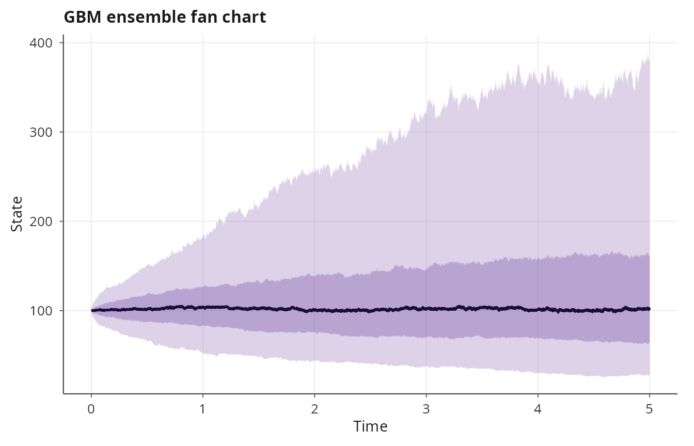
plot(ens_sde, type = "terminal", title = "GBM terminal distribution")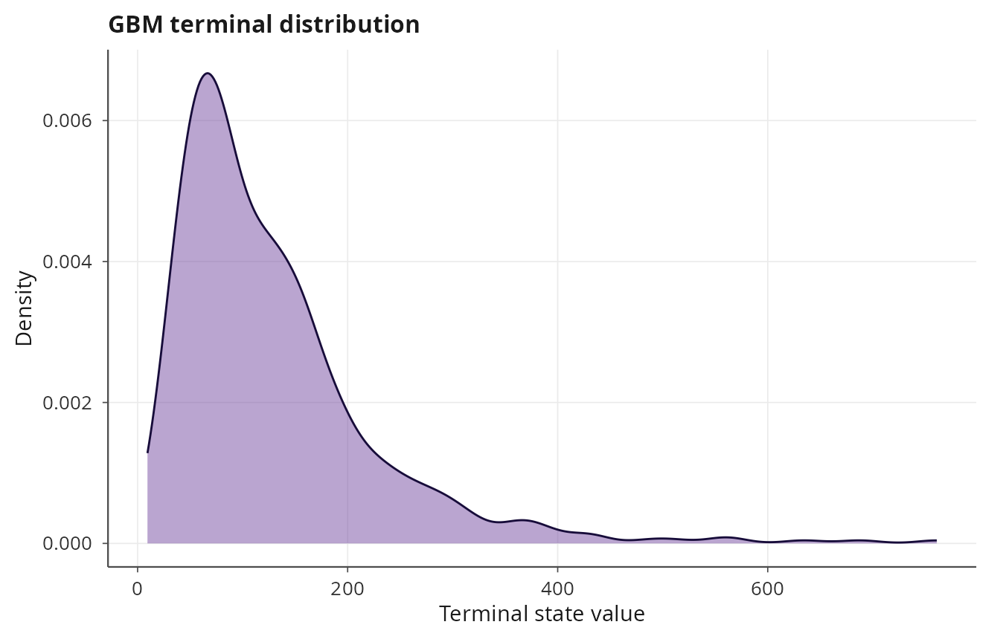
Varying initial conditions and parameters
The vary argument enables per-replicate initial
conditions and parameters. It accepts a list with optional elements
init (a function of replicate index returning a named
numeric vector) and parms (a function of replicate index
returning a named list). Using vary forces the R-level
parallel backend because each replicate may differ structurally.
# Vary initial population size across replicates
ens_vary <- ensemble_sim(
bd, n_replicates = 200, t_max = 20,
solver = solver_ssa_direct(),
n_cores = 1,
vary = list(
init = function(i) c(N = as.integer(50 + 5 * i))
)
)
#> ⚙ Ensemble simulation: 200 replicates
#> ¡ Backend: mclapply (1 cores)
#> ¡ Solver: ssa_direct, t_max = 20, seed = 42
#> ✔ Ensemble completed in 5.14s
plot(ens_vary, type = "spaghetti", max_traces = 30,
title = "Varying initial conditions")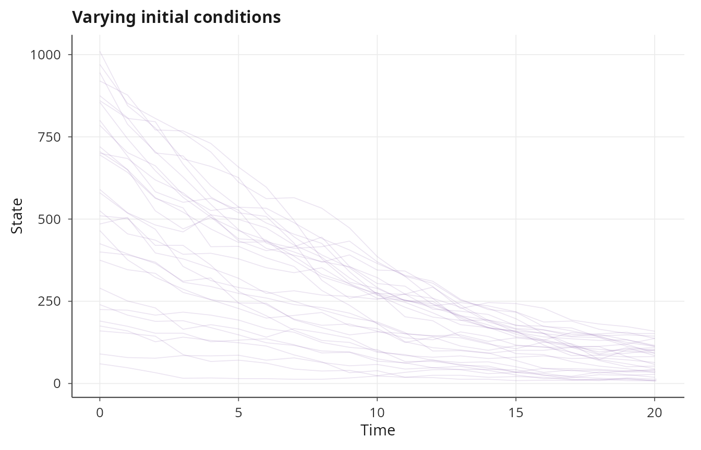
plot(ens_vary, type = "terminal", title = "Terminal states with varying IC")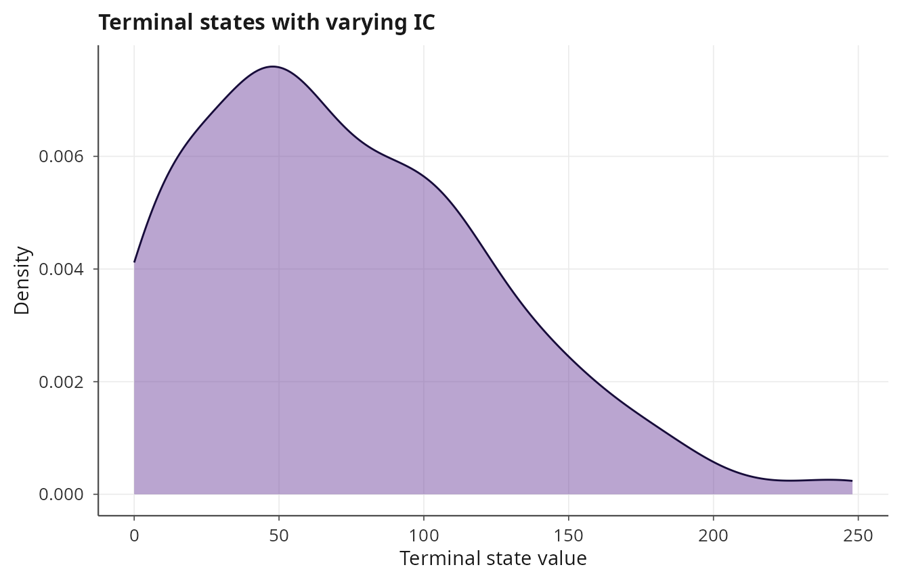
Parameter sweeps
Combining vary with parameter functions enables
systematic parameter sweeps within a single ensemble call:
# Sweep death rate from subcritical to supercritical
ens_sweep <- ensemble_sim(
bd, n_replicates = 100, t_max = 30,
solver = solver_ssa_direct(),
n_cores = 1,
vary = list(
parms = function(i) list(lambda = 1.0, mu = 0.8 + 0.01 * i)
)
)
#> ⚙ Ensemble simulation: 100 replicates
#> ¡ Backend: mclapply (1 cores)
#> ¡ Solver: ssa_direct, t_max = 30, seed = 42
#> ✔ Ensemble completed in 0.08s
plot(ens_sweep, type = "terminal", title = "Death rate sweep terminal states")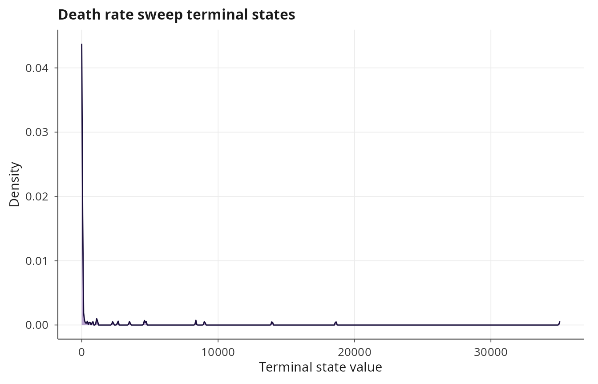
Memory-efficient mode
For large ensembles, storing all trajectory matrices can exhaust
available memory. Setting store_trajectories = FALSE avoids
this by keeping only the terminal states and running statistics (mean
and standard deviation at each time point):
ens_large <- ensemble_sim(bd, n_replicates = 1000, t_max = 20,
solver = solver_ssa_direct(),
store_trajectories = FALSE)
#> ⚙ Ensemble simulation: 1000 replicates
#> ¡ Backend: openmp (19 threads)
#> ¡ Solver: ssa_direct, t_max = 20, seed = 42
#> ✔ Ensemble completed in 0.01s
print(ens_large)
#>
#> Ensemble simulation
#> ----------------------------------------
#>
#> Replicates: 1000
#> Solver: ssa_direct
#> Duration: 20
#> Backend: openmp (19 threads)
#> Elapsed: 0.01s
#>
#> Terminal state statistics:
#> N: mean = 13.676, sd = 15.994
#>
#> Extinction events:
#> N: 248/1000 (24.8%)
# Full trajectories are not available
is.null(ens_large$trajectories) # TRUE
#> [1] TRUE
# But terminal states and summary statistics are
dim(ens_large$terminal_states)
#> [1] 1000 1
plot(ens_large, type = "terminal",
title = "Large ensemble terminal states")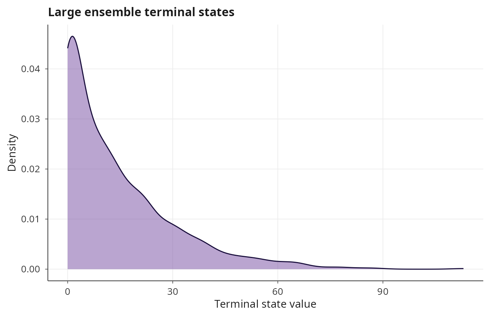
Fan and spaghetti plots require stored trajectories and will produce an informative error when called on a memory-efficient ensemble. The convergence, terminal, and extinction plots remain available.
Ensemble with ODE solvers
Although ensemble simulation is most commonly used for stochastic
models, it works with any solver, including deterministic ODE solvers.
When combined with vary, this enables sensitivity analysis
by initial conditions or parameters:
lv <- system_spec(
rhs = list(
prey ~ alpha * prey - beta * prey * predator,
predator ~ delta * prey * predator - gamma * predator
),
state_names = c("prey", "predator"),
parms = list(alpha = 1.0, beta = 0.1, delta = 0.075, gamma = 1.5),
init = c(prey = 40, predator = 9)
)
ens_ode <- ensemble_sim(
lv, n_replicates = 50, t_max = 30,
solver = solver_rk45(),
discard_transient = 0,
n_cores = 1,
vary = list(
init = function(i) c(prey = 30 + i, predator = 5 + 0.2 * i)
)
)
#> ⚙ Ensemble simulation: 50 replicates
#> ¡ Backend: mclapply (1 cores)
#> ¡ Solver: rk45, t_max = 30, seed = 42
#> ✔ Ensemble completed in 0.22s
plot(ens_ode, type = "spaghetti",
title = "Lotka-Volterra varying initial conditions")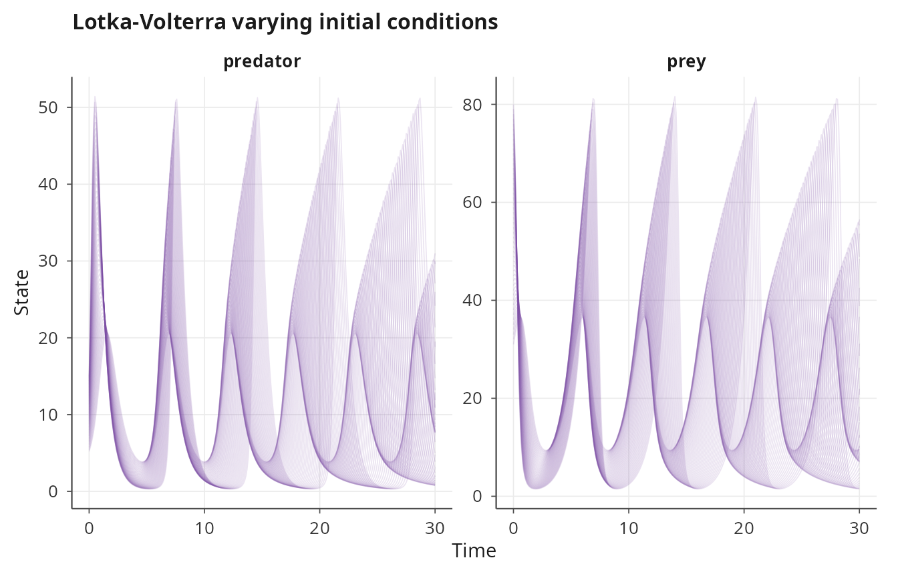
Tau-leap ensemble
Adaptive tau-leap also supports OpenMP batch compilation:
sir <- system_spec(
stoichiometry = list(
infection = c(S = -1L, I = 1L, R = 0L),
recovery = c(S = 0L, I = -1L, R = 1L)
),
propensities = list(
infection ~ beta * S * I,
recovery ~ gamma * I
),
state_names = c("S", "I", "R"),
parms = list(beta = 0.001, gamma = 0.1),
init = c(S = 999L, I = 1L, R = 0L)
)
ens_tau <- ensemble_sim(sir, n_replicates = 300, t_max = 200,
solver = solver_tau_leap(),
discard_transient = 0)
#> ⚙ Ensemble simulation: 300 replicates
#> ¡ Backend: openmp (19 threads)
#> ¡ Solver: tau_leap, t_max = 200, seed = 42
#> ✔ Ensemble completed in 4.61s
plot(ens_tau, type = "fan", title = "SIR tau-leap ensemble")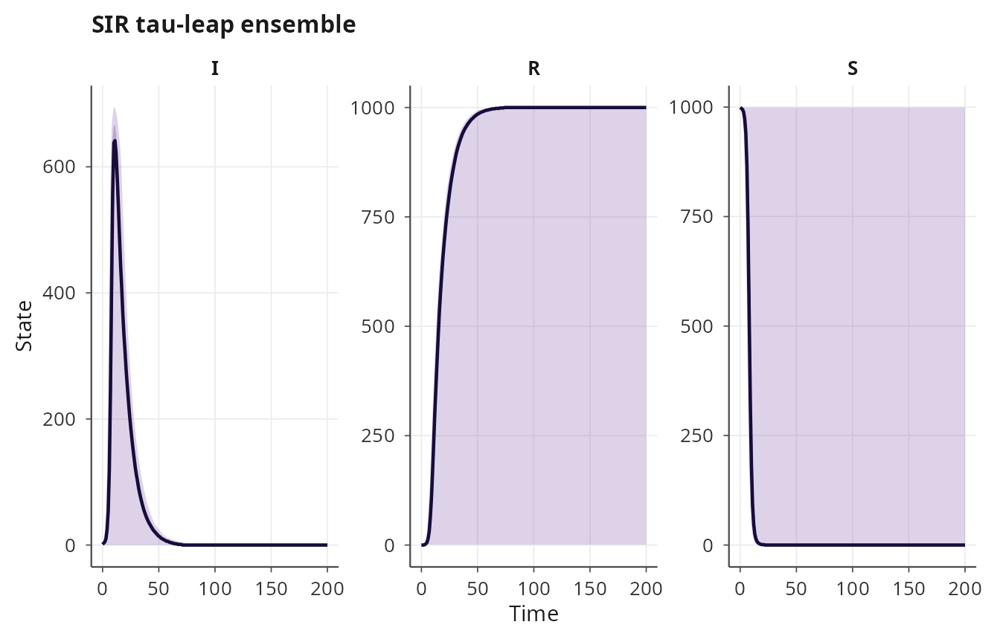
Practical guidance
For SSA Direct, SDE EM, and tau-leap with uniform initial conditions
and parameters, the OpenMP batch backend can be orders of magnitude
faster than R-level parallelism because it avoids R-to-C++ dispatch
overhead per replicate and eliminates inter-process communication. The
R-level backend is necessary for solvers that lack batch compilers (DDE,
PDE, PDMP, Rosenbrock, etc.) or when vary is used.
The number of cores defaults to one fewer than the available hardware
threads. For OpenMP batch, this is the number of OpenMP threads; for
mclapply, it is the number of forked processes. Setting
n_cores = 1 disables parallelism, which is useful for
debugging or profiling.
When the ensemble size is uncertain, start with a small run and use the convergence plot to assess whether the running mean has stabilized. The standard error of the mean decreases as \(1/\sqrt{n}\), so doubling the precision requires four times as many replicates.